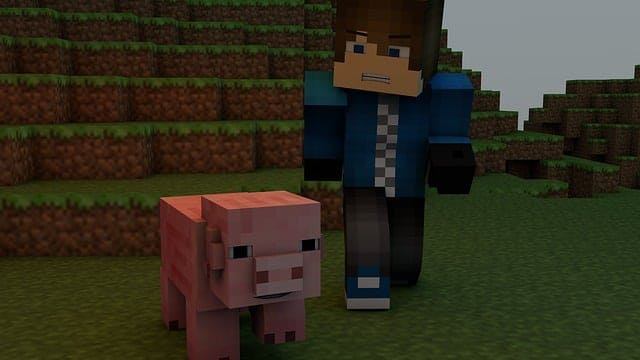

Un pack de texture Minecraft est un ensemble de fichiers qui modifient l'apparence visuelle du jeu. Il remplace les textures par défaut des blocs, des objets, des mobs et d'autres éléments dans Minecraft, offrant une expérience de jeu visuellement différente et personnalisée.
Les packs de texture permettent aux joueurs de personnaliser leur expérience de jeu en ajoutant des textures uniques et créatives. Ils peuvent améliorer l'apparence visuelle du jeu, créer des thèmes spécifiques, donner un aspect réaliste ou artistique, et offrir une immersion plus profonde dans l'univers de Minecraft.
Pour trouver des packs de texture Minecraft, vous pouvez explorer des sites web spécialisés, des forums Minecraft, des plateformes de partage de contenu ou des boutiques en ligne. Une fois que vous avez trouvé un pack de texture qui vous intéresse, téléchargez-le et placez-le dans le dossier des ressources de Minecraft. Ensuite, vous pouvez sélectionner le pack de texture dans les paramètres du jeu pour l'appliquer.
Il existe de nombreux packs de texture populaires pour Minecraft, créés par la communauté de joueurs. Certains exemples de packs de texture populaires comprennent "Faithful", "Sphax PureBDCraft", "John Smith Legacy" et "Dokucraft". Ces packs de texture offrent des styles variés et des résolutions différentes pour répondre aux préférences des joueurs.
L'utilisation de packs de texture dans Minecraft présente plusieurs avantages. Cela permet aux joueurs de personnaliser leur expérience de jeu, d'ajouter de la variété visuelle, d'améliorer les détails graphiques, de créer des environnements uniques, de renouveler l'intérêt pour le jeu et de partager leurs créations avec d'autres joueurs.
Si vous souhaitez créer votre propre pack de texture Minecraft, vous pouvez commencer par rassembler les ressources graphiques que vous souhaitez utiliser, telles que des images et des textures. Ensuite, vous pouvez les modifier à l'aide d'un éditeur d'images, en veillant à respecter les spécifications et les formats requis par Minecraft. Une fois vos ressources prêtes, vous pouvez créer une structure de dossiers spécifique pour votre pack de texture et y organiser vos fichiers. Assurez-vous d'inclure un fichier "pack.mcmeta" qui contient les métadonnées du pack, telles que la version du pack et la description. Ensuite, vous pouvez compresser le dossier contenant votre pack de texture dans un fichier au format .zip. Renommez le fichier avec l'extension .zip en .mcpack. Une fois votre pack de texture créé, vous pouvez l'installer en plaçant le fichier .mcpack dans le dossier "resource_packs" de votre installation Minecraft. Ensuite, dans les paramètres du jeu, vous pouvez sélectionner le pack de texture que vous avez créé pour l'appliquer à votre monde de jeu.
Oui, il existe de nombreuses ressources en ligne pour trouver des packs de texture Minecraft. Vous pouvez visiter des sites web spécialisés, des forums Minecraft, des communautés de joueurs et des plateformes de partage de contenu pour découvrir une grande variété de packs de texture créés par la communauté. Ces ressources offrent souvent des options de recherche, des évaluations et des critiques pour vous aider à trouver les packs de texture qui correspondent à vos préférences.
Le choix du pack de texture dépend de vos préférences personnelles et de l'ambiance que vous souhaitez créer dans votre jeu. Il existe des packs de texture réalistes, cartoon, modernes, médiévaux et bien d'autres encore. Vous pouvez également prendre en compte la résolution des textures, car des packs de texture haute résolution peuvent nécessiter une configuration matérielle plus puissante. N'hésitez pas à télécharger et essayer différents packs de texture pour trouver celui qui correspond le mieux à votre style de jeu.
Oui, vous pouvez utiliser plusieurs packs de texture en même temps dans Minecraft. Dans les paramètres du jeu, vous pouvez définir l'ordre de priorité des packs de texture. Cela signifie que si deux packs de texture modifient la même texture, la texture du pack ayant la priorité la plus élevée sera affichée. Cela vous permet de combiner différents packs de texture pour obtenir l'apparence souhaitée.
Pour personnaliser un pack de texture existant dans Minecraft, vous pouvez ouvrir le fichier .zip du pack de texture avec un logiciel d'archivage, tel que WinRAR ou 7-Zip. Ensuite, vous pouvez modifier les fichiers d'images correspondants à vos préférences en utilisant un éditeur d'images. Assurez-vous de conserver la structure de dossiers d'origine du pack de texture. Une fois vos modifications terminées, enregistrez les fichiers modifiés et remplacez les fichiers correspondants dans le fichier .zip du pack de texture. Ensuite, vous pouvez réimporter le pack de texture modifié dans Minecraft pour voir vos modifications appliquées.